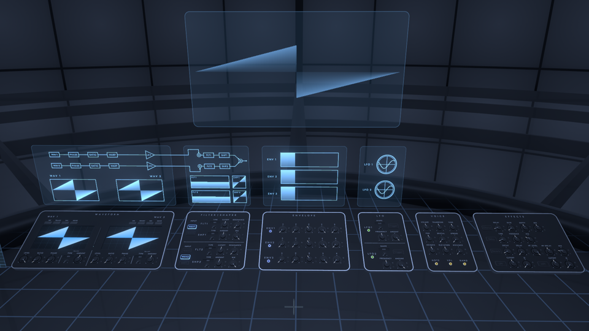
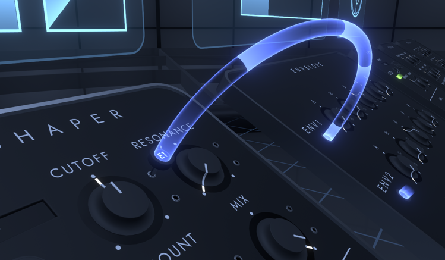

シンセサイザー

シンセサイザーのパラメータを編集し、音作りを行うことができます。 シンセサイザーは6つのパネルに分けられており、パネル上のつまみやボタンによって操作を行うことができます。 上部の画面には、シンセサイザーの状態が表示されています。
このシンセサイザーで作成する音色のことはInstrumentと呼びます。 編集されるInstrumentは、ワールドメニューのCONTROLタブで設定したものが使用されます。
操作方法
- VRではつまみを回す、デスクトップではつまみをマウスを上下にドラッグすることで、シンセサイザーのパラメータの値を変更することができます。
- つまみを素早く2回掴むと、パラメータをデフォルト値に戻すことができます。
- WAVEFORMパネルのペンを使って波形を描くことができます。パネルの中央にあるペンを持った後、ペン先をパネルの波形画面に向けてUSEすることで波形を描きます。
モジュレーション割り当て

パラメータに対してモジュレーションを割り当てることで、発音中にパラメータの値を自動で動かすことができます。
- ENV1、LFO1などの隣にある光が出ている穴を掴むと、手にプラグが出現します。この状態で以下の操作をすることで、モジュレーションを割り当てることができます。
- VRではプラグをつまみの右にあるジャックに触れさせます。
- デスクトップではレティクルをつまみの右にあるジャックの穴に合わせてクリックします。
- 割り当て後のプラグをつまみと同じように回すことで、モジュレーション量を変更することができます。
- モジュレーションの割り当てを解除するには、VRではプラグを引き抜き、デスクトップではプラグを掴んだ状態で後ろに移動します。
- モジュレーションは最大16個まで割り当てることができます。
WAVEFORM
波形に関する設定を行うことができます。
- SINE/TRIANGLE/SAW/SQUARE: 波形をプリセットから選択する
- LEVEL: 波形の音量の大きさ
- RATIO: 波形の周波数の倍率
- PHASE: 波形の位相
- WARP: 波形を変形させるワープ効果の設定
- TYPE: ワープ効果の種類
- SYNC: オシレーターシンク
- BEND: 波形を歪め、中央に縮めるか、中央から引き伸ばす
- PWM: 波形を中央に向かって縮小する
- ASYM: 波形の中央を左右に動かす
- FLIP: 波形の一部の上下を反転させる
- MIRROR: 元の波形と左右を反転させた波形を左右に並べ、それぞれの波形の中央を左右に動かす
- DOWNSMP: 波形のサンプリング周波数を下げる
- PM: 他方の波形から位相変調を行う
- RM: 他方の波形からリングモジュレーションを行う
- NOISE: 波形のサンプリング位置にノイズをミックスする
- AMOUNT: ワープ効果の量
- TYPE: ワープ効果の種類
プリセット波形が使用されている状態では、パネル上の波形表示が暗くなります。 この場合、セーブデータに波形データの代わりにプリセット番号が記録されるため、セーブデータの長さが短くなります。
上部の画面には、波形の処理の流れと、それぞれの波形でWARPが適用された後の出力波形が表示されています。
FILTER | SHAPER
フィルター(FLT)とシェイパー(SHP)を波形に対してかけることができます。
- INPUT: FLT1とFLT2の入力についてどの波形を入力するかを指定します。WAV1とWAV2は、どちらのFLTにも入力されていない場合はFLTへの入力がバイパスされ、最後でミックスされます。SHP1は、オンになっている場合はFLT2へ入力され、オフになっている場合は最後でミックスされます。
- FLT1/FLT2:
- TYPE: フィルターの種類
- LP: ローパスフィルター
- HP: ハイパスフィルター
- BP: バンドパスフィルター
- NOTCH: ノッチフィルター
- CUTOFF: フィルターのカットオフ周波数
- RESONANCE: フィルターのレゾナンス値
- TYPE: フィルターの種類
- SHP1/SHP2:
- TYPE: シェイパーのタイプ
- SOFT CLIP: 波形を滑らかに上下でクリップさせる
- HARD CLIP: 波形を上下でピークを超えた成分をクリップさせる
- LIN. FOLD: 波形を上下で折り返す
- SINE FOLD: 波形にサイン関数を適用することで折り返す
- BITCRUSH: 波形の量子化ビット数を下げる
- DOWNSMP: 波形のサンプリング周波数を下げる
- AMOUNT: シェイパーの効果の強さ
- MIX: 元の波形とシェイパー適用後の波形のミックス量
- TYPE: シェイパーのタイプ
上部の画面には、適用されるフィルターとシェイパーの処理の流れと、フィルターの周波数特性と、シェイパーの入力と出力の関係のグラフが表示されています。
ENVELOPE
ENVELOPEは、ノートオンとノートオフからの時間に伴って変化するモジュレーションを生成します。 Fractoneでは3つのエンベロープが使用できます。 既定でENV1がVOICEのVOLUMEに対してモジュレーションを行います。
- A: アタック時間。ノートオン直後にモジュレーション値が0から最大値になるまでの時間。
- H: ホールド時間。アタック後にモジュレーション値が最大値を維持する時間。
- D: ディケイ時間。ホールド後からモジュレーション値が最大値からサスティン値になるまでの時間。
- S: サスティン値。ディケイ後のモジュレーション値。
- R: リリース時間。ノートオフ後にモジュレーション値が0になるまでの時間。
上部の画面には、各エンベロープの時間に対するモジュレーション値のグラフが表示されています。 グラフのうちの塗りつぶされていない部分がリリース部を表しています。
LFO
LFO (Low Frequency Oscillator)は、周期的に変化するモジュレーションを生成します。 Fractoneでは2つのLFOが使用できます。
- SHAPE: LFOの波形を選択。
- Trigger: 音が鳴らされた時にLFOの波形の位相をリセットするかどうかを指定。
- FREQUENCY: LFO波形の周波数。
- AMOUNT: LFOの効果量。
上部の画面には、各LFO波形の状態が表示されています。
VOICE
音源に関する設定を行うことができます。
- VOLUME: 音量
- TRANSPOSE: ピッチを上下2オクターブの範囲で変更する
- TUNE: ピッチを上下1半音の範囲で変更する
- PAN: 音のパンを設定する
- SPATIAL: 立体音響効果の量。UnityのAudioSourceのSpatialプロパティと対応。
- SPREAD: 立体音響効果が適用された際の音の広がり。UnityのAudioSourceのSpreadプロパティと対応。
- AZIMUTH: 音源位置の方位角
- ELEVATION: 音源位置の仰角
- DISTANCE: 中心からの音源の距離
- モジュレーション:
- NOTE: ノートの高さ
- VEL: ノートのベロシティ
- RAND: ノートごとのランダムな値
EFFECTS
音声にオーディオエフェクトを適用することができます。 各エフェクトの名前のボタンを押すことでエフェクトの有効と無効を切り替えます。 エフェクトはUnityのAudio Filterコンポーネントによって実装されています。
Chorus
音声にコーラス効果をかけます。 UnityのAudioChorusFilterと対応します。
- DELAY: 原音からコーラス適用後の音が鳴るまでの遅延。AudioChorusFilter.delayと対応。
- RATE: コーラス変調の周波数。AudioChorusFilter.rateと対応。
- DEPTH: コーラスでの変調の深さ。AudioChorusFilter.depthと対応。
- MIX: 原音とコーラス適用後の音のミックス量。AudioChorusFilterのdryMix、wetMix1、wetMix2、wetMix3と対応。
Delay
音声にディレイ効果をかけます。 UnityのAudioEchoFilterと対応します。
- TIME: 原音からディレイ音までの遅延。AudioEchoFilter.delayと対応。
- FEEDBACK: ディレイあたりの減衰比率。AudioEchoFilter.decayRatioと対応。
- MIX: 原音とディレイ適用後の音のミックス量。AudioEchoFilterのdryMixとwetMixと対応。
Reverb
音声にリバーブ効果をかけます。 UnityのAudioReverbFilterと対応します。
- DECAY: リバーブの減衰時間。AudioReverbFilter.decayTimeと対応。
- DELAY: リバーブの遅延時間。AudioReverbFilter.reverbDelayと対応。
- HF LEVEL: リバーブの高周波数成分の音量。AudioReverbFilter.roomHFと対応。
- HF DECAY: リバーブの高周波成分と低周波成分の減衰時間の比率。AudioReverbFilter.decayHFRatioと対応。
- MIX: 原音とリバーブ適用後の音のミックス量。AudioReverbFilterのdryMixとroomと対応。
LPF
音声にローパスフィルターをかけます。 UnityのAudioLowPassFilterと対応します。
- CUTOFF: カットオフ周波数。AudioLowPassFilter.cutoffFrequencyと対応。
- Q: レゾナンス値。AudioLowPassFilter.lowpassResonanceQと対応。
HPF
音声にハイパスフィルターをかけます。 UnityのAudioHighPassFilterと対応します。
- CUTOFF: カットオフ周波数。AudioHighPassFilter.cutoffFrequencyと対応。
- Q: レゾナンス値。AudioHighPassFilter.highpassResonanceQと対応。